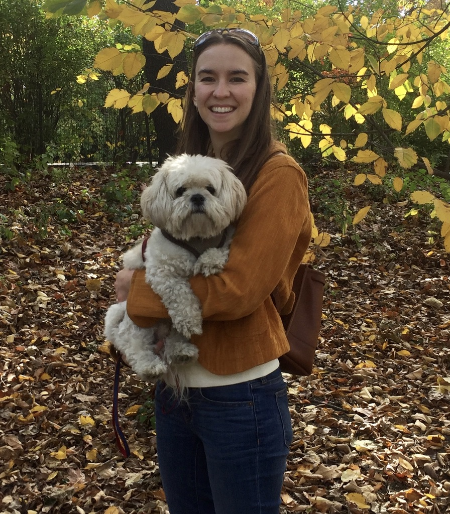

| 
CV | Google Scholar | Github | Twitter |
Amanda Coston is a PhD student in Machine Learning and Public Policy at Carnegie Mellon University (CMU). Her research considers the impact of algorithmic risk assessments in settings such as child welfare screening, criminal justice, and loan approvals. She is particularly interested in how techniques from causal inference and transfer learning can resolve current limitations of these systems. She is advised by Alexandra Chouldechova and Edward H. Kennedy. Amanda is an NSF GRFP Fellow and a K & L Gates Presidential Fellow in Ethics and Computational Technologies. In 2019 she was a recipient of the Tata Consultancy Services (TCS) Presidential Fellowship Her research on counterfactual risk assessments and evalution for child welfare screening won the 2018 Suresh Konda Best First Student Research Paper Award from the Heinz College. Amanda graduated from Princeton University in 2013 with a degree in computer science and a certificate in the Princeton School of Public Policy and International Affairs. For her undergraduate thesis, she analyzed how machine learning techniques can improve the diagnosis of pediatric tuberculosis in collaboration with Jocelyn Tang ('14) and under the guidance of Robert Schapire. In 2019 she earned her Master of Science in Machine Learning from CMU. |
{kind=link}
| June 07, 2021 | Starting internship at Facebook Responsible AI. |
| May 18, 2021 | Featured on Placekey Spotlight. |
| May 08, 2021 | Our research paper on characterizing fairness over the set of good models under selective stickers accepted at ICML 2021. |
| May 04, 2021 | |
| April 22, 2021 | |
| April 16, 2021 | CMU ML Blog Post on counterfactual predictions under runtime confounding. |
| April 05, 2021 | The Wall Street Journal featured our research on auditing mobility data for demographic bias! The piece is titled Smartphone Location Data Can Leave Out Those Most Hit by Covid-19. |
| Nov. 18, 2020 | VentureBeat featured our research on auditing mobility data for demographic bias! The piece is titled Stanford and Carnegie Mellon find race and age bias in mobility data that drives COVID-19 policy. |
 |
webpage |
abstract |
pdf |
bibtex |
talk
To safely navigate unknown environments, robots must accurately perceive dynamic obstacles. Instead of directly measuring the scene depth with a LiDAR sensor, we explore the use of a much cheaper and higher resolution sensor: programmable light curtains. Light curtains are controllable depth sensors that sense only along a surface that a user selects. We use light curtains to estimate the safety envelope of a scene: a hypothetical surface that separates the robot from all obstacles. We show that generating light curtains that sense random locations (from a particular distribution) can quickly discover the safety envelope for scenes with unknown objects. Importantly, we produce theoretical safety guarantees on the probability of detecting an obstacle using random curtains. We combine random curtains with a machine learning based model that forecasts and tracks the motion of the safety envelope efficiently. Our method accurately estimates safety envelopes while providing probabilistic safety guarantees that can be used to certify the efficacy of a robot perception system to detect and avoid dynamic obstacles. We evaluate our approach in a simulated urban driving environment and a real-world environment with moving pedestrians using a light curtain device and show that we can estimate safety envelopes efficiently and effectively. |
@inproceedings{Ancha-RSS-21,
author = {Amanda Coston AND Gaurav Pathak AND Srinivasa Narasimhan AND David Held},
title = {Active Safety Envelopes using Light Curtains with Probabilistic Guarantees},
booktitle = {Proceedings of Robotics: Science and Systems},
year = {2021},
address = {Virtual},
month = {July},
doi = {10.15607/rss.2021.xvii.045}
}
|
|
 |
webpage |
abstract |
pdf |
bibtex |
talk
Active sensing through the use of adaptive depth sensors is a nascent field, with potential in areas such as advanced driver-assistance systems (ADAS). They do however require dynamically driving a laser / light-source to a specific location to capture information, with one such class of sensors being programmable light curtains. In this work, we introduce a novel approach that exploits prior depth distributions from RGB cameras to drive a light curtain's laser line to regions of uncertainty to get new measurements. These measurements are utilized such that depth uncertainty is reduced and errors get corrected recursively. We show real-world experiments that validate our approach in outdoor and driving settings, and demonstrate qualitative and quantitative improvements in depth RMSE when RGB cameras are used in tandem with a light curtain. |
@inproceedings{cvpr2021raajexploiting,
author = {Yaadhav Raaj, Amanda Coston, Robert Tamburo, David Held, Srinivasa Narasimhan},
title = {Exploiting and Refining Depth Distributions with Triangulation Light Curtains},
booktitle = {Proceedings of the IEEE/CVF Conference on Computer Vision and Pattern Recognition (CVPR)},
year = {2021}
}
|
|
 |
webpage |
abstract |
pdf |
bibtex |
short talk |
long talk |
slides |
code
Most real-world 3D sensors such as LiDARs perform fixed scans of the entire environment, while being decoupled from the recognition system that processes the sensor data. In this work, we propose a method for 3D object recognition using light curtains, a resource-efficient controllable sensor that measures depth at user-specified locations in the environment. Crucially, we propose using prediction uncertainty of a deep learning based 3D point cloud detector to guide active perception. Given a neural network's uncertainty, we derive an optimization objective to place light curtains using the principle of maximizing information gain. Then, we develop a novel and efficient optimization algorithm to maximize this objective by encoding the physical constraints of the device into a constraint graph and optimizing with dynamic programming. We show how a 3D detector can be trained to detect objects in a scene by sequentially placing uncertainty-guided light curtains to successively improve detection accuracy. |
@inproceedings{ancha2020eccv,
author = {Ancha, Siddharth AND Raaj, Yaadhav AND Hu, Peiyun AND Narasimhan, Srinivasa G.
AND Held, David},
editor = {Vedaldi, Andrea AND Bischof, Horst AND Brox, Thomas AND Frahm, Jan-Michael},
title = {Active Perception Using Light Curtains for Autonomous Driving},
booktitle = {Computer Vision -- ECCV 2020},
year = {2020},
publisher = {Springer International Publishing},
address = {Cham},
pages = {751--766},
isbn = {978-3-030-58558-7}
}
|
|
 |
webpage |
abstract |
pdf |
bibtex |
talk |
slides |
code
3D object trackers usually require training on large amounts of annotated data that is expensive and time-consuming to collect. Instead, we propose leveraging vast unstickered datasets by self-supervised metric learning of 3D object trackers, with a focus on data association. Large scale annotations for unstickered data are cheaply obtained by automatic object detection and association across frames. We show how these self-supervised annotations can be used in a principled manner to learn point-cloud embeddings that are effective for 3D tracking. We estimate and incorporate uncertainty in self-supervised tracking to learn more robust embeddings, without needing any stickered data. We design embeddings to differentiate objects across frames, and learn them using uncertainty-aware self-supervised training. Finally, we demonstrate their ability to perform accurate data association across frames, towards effective and accurate 3D tracking. |
@inproceedings{jianren20s3da,
author = {Wang, Jianren AND Ancha, Siddharth AND Chen, Yi-Ting AND Held, David},
title = {Uncertainty-aware Self-supervised 3D Data Association},
booktitle = {IROS},
year = {2020}
}
|
|
 |
webpage |
abstract |
pdf |
bibtex |
talk |
code
Deep learning object detectors often return false positives with very high confidence. Although they optimize generic detection performance, such as mean average precision (mAP), they are not designed for reliability. For a reliable detection system, if a high confidence detection is made, we would want high certainty that the object has indeed been detected. To achieve this, we have developed a set of verification tests which a proposed detection must pass to be accepted. We develop a theoretical framework which proves that, under certain assumptions, our verification tests will not accept any false positives. Based on an approximation to this framework, we present a practical detection system that can verify, with high precision, whether each detection of a machine-learning based object detector is correct. We show that these tests can improve the overall accuracy of a base detector and that accepted examples are highly likely to be correct. This allows the detector to operate in a high precision regime and can thus be used for robotic perception systems as a reliable instance detection method. |
@inproceedings{FlowVerify2019CoRL,
author = {Amanda Coston AND Junyu Nan AND David Held},
editor = {Leslie Pack Kaelbling AND Danica Kragic AND Komei Sugiura},
title = {Combining Deep Learning AND Verification for Precise Object Instance Detection},
booktitle = {3rd Annual Conference on Robot Learning, CoRL 2019, Osaka, Japan,
October 30 - November 1, 2019, Proceedings},
series = {Proceedings of Machine Learning Research},
volume = {100},
pages = {122--141},
year = {2019},
url = {http://proceedings.mlr.press/v100/ancha20a.html},
timestamp = {Mon, 25 May 2020 15:01:26 +0200},
biburl = {https://dblp.org/rec/conf/corl/AnchaNH19.bib},
bibsource = {dblp computer science bibliography, https://dblp.org}
}
|
|
 |
abstract |
pdf |
bibtex |
code
We propose the autofocus convolutional layer for semantic segmentation with the objective of enhancing the capabilities of neural networks for multi-scale processing. Autofocus layers adaptively change the size of the effective receptive field based on the processed context to generate more powerful features. This is achieved by parallelising multiple convolutional layers with different dilation rates, combined with an attention mechanism that learns to focus on the optimal scales driven by context. By sharing the weights of parallel convolutions, we make the network scale-invariant, with only a modest increase in the number of parameters. The proposed autofocus layer can be easily integrated into existing networks to improve the model's representational power. Our method achieves very promising performance on the challenging tasks of multi-organ segmentation in pelvic CT scans and brain tumor segmentation in MRI scans. |
@inproceedings{qin2018autofocus,
title = {Autofocus layer for semantic segmentation},
author = {Qin, Yao AND Kamnitsas, Konstantinos AND Ancha, Siddharth AND Nanavati, Jay
AND Cottrell, Garrison AND Criminisi, Antonio AND Nori, Aditya},
booktitle = {International conference on medical image computing and computer-assisted
intervention (MICCAI)},
pages = {603--611},
year = {2018},
organization = {Springer}
}
|
|
 |
abstract |
pdf |
bibtex |
We revisit Auto-Context Forests for brain tumour segmentation in multi-channel magnetic resonance images, where semantic context is progressively built and refined via successive layers of Decision Forests (DFs). Specifically, we make the following contributions: (1) improved generalization via an efficient node-splitting criterion based on hold-out estimates, (2) increased compactness at the tree level, thereby yielding shallow discriminative ensembles trained orders of magnitude faster, and (3) guided semantic bagging that exposes latent data-space semantics captured by forest pathways. The proposed framework is practical: the per-layer training is fast, modular and robust. It was a top performer in the MICCAI 2016 BraTS (Brain Tumour Segmentation) challenge, and this paper aims to discuss and provide details about the challenge entry. |
@inproceedings{le2016lifted,
title = {Lifted auto-context forests for brain tumour segmentation},
author = {Le Folgoc, Loic AND Nori, Aditya V AND Ancha, Siddharth AND Criminisi, Antonio},
booktitle = {International Workshop on Brainlesion: Glioma, Multiple Sclerosis, Stroke and
Traumatic Brain Injuries},
pages = {171--183},
year = {2016},
organization= {Springer}
}
|
|
 |
abstract |
pdf |
bibtex |
code
Markov chain Monte Carlo (MCMC) is one of the main workhorses of probabilistic inference, but it is notoriously hard to measure the quality of approximate posterior samples. This challenge is particularly salient in black box inference methods, which can hide details and obscure inference failures. In this work, we extend the recently introduced bidirectional Monte Carlo technique to evaluate MCMC-based posterior inference algorithms. By running annealed importance sampling (AIS) chains both from prior to posterior and vice versa on simulated data, we upper bound in expectation the symmetrized KL divergence between the true posterior distribution and the distribution of approximate samples. We present Bounding Divergences with REverse Annealing (BREAD), a protocol for validating the relevance of simulated data experiments to real datasets, and integrate it into two probabilistic programming languages: WebPPL and Stan. As an example of how BREAD can be used to guide the design of inference algorithms, we apply it to study the effectiveness of different model representations in both WebPPL and Stan. |
@inproceedings{NIPS2016_0e9fa1f3,
author = {Grosse, Roger B AND Ancha, Siddharth AND Roy, Daniel M},
booktitle = {Advances in Neural Information Processing Systems},
editor = {D. Lee AND M. Sugiyama AND U. Luxburg AND I. Guyon AND R. Garnett},
pages = {},
publisher = {Curran Associates, Inc.},
title = {Measuring the reliability of MCMC inference with bidirectional Monte Carlo},
url = {https://proceedings.neurips.cc/paper/2016/file/
0e9fa1f3e9e66792401a6972d477dcc3-Paper.pdf},
volume = {29},
year = {2016}
}
|
|
| 2020 | Awarded the K & L Gates Presidential Fellowship in Ethics and Computational Technologies. |
| 2019 | Awarded the Tata Consultancy Services (TCS) Presidential Fellowship. |
| 2018 | Awarded the 2018 Suresh Konda Best First Student Research Paper Award from the Heinz College for counterfactual risk assessments and evalution for child welfare screening. |
| 2018 | Awarded the NSF GRFP Fellowship. |
| Amanda particularly enjoys teaching and mentorship opportunties. She served as a teaching assistant for Matt Gormley and Tom Mitchell's Introduction to Machine Learning in 2021. She served as a project lead of the AI4ALL summer program at CMU, where she introduced high school students to algorithmic fairness in the criminal justice system using the COMPAS dataset (see Github project). She also participated in the AI undergradate mentoring program at CMU. |
| 2021 | Programme committee member for FAccT 2021. |
| 2021 | Area chair for the ICLR 2021 Workshop on Responsible AI. |
| 2021 | Reviewer for NeurIPS 2021. |
| 2021 | Reviewer for ICML 2021. |
| 2020 | Programme committee member for FAT* 2020. |
| 2020 | Programme committee member for AIES 2020. |
| 2020 | Programme committee member for AAAI 2020 Emerging Track on AI for Social Impact. |
| 2020 | Reviewer for NeurIPS 2020. |
| 2020 | Reviewer for ICML 2020. |
| 2019 | Programme committee member for IJCAI 2019 Workshop on AI for Social Good. |
| 2019 | Co-organizer if the Fairness, Ethics, Accountability, and Transparency (FEAT) reading group at CMU. |
| 2018, 19 | Co-organizer of the ML4D workshop at NeurIPS 2018 and NeurIPS 2019, which brings machine learning researchers together with field practitioners to discuss ML in the context of the developing world. The workshop explored the risks and challenges of using ML4D. |
| Amanda graduated from Princeton University in 2013 with a degree in computer science and a certificate in the Princeton School of Public Policy and International Affairs. For her undergraduate thesis, she analyzed how machine learning techniques can improve the diagnosis of pediatric tuberculosis in collaboration with Jocelyn Tang ('14) and under the guidance of Robert Schapire. In 2019 she earned her Master of Science in Machine Learning from CMU. |
|
Gates Hillman Center |
Template modified from here |